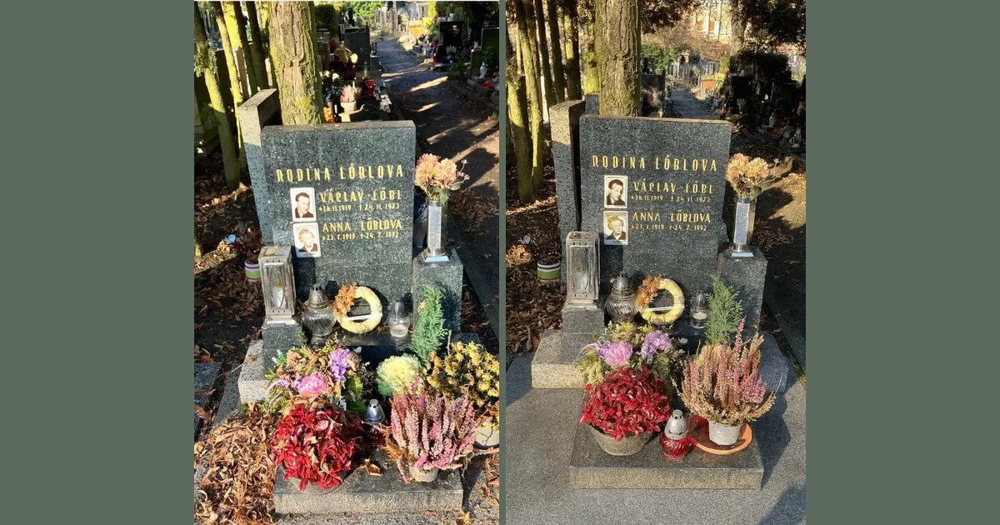

Jak připravit hrob na Dušičky (a co dělat, když to letos nestihnete)
Na Dušičky se hřbitovy promění. Všude hoří svíčky, lidé se zastavují u hrobů, potkávají známé a vzpomínají. Je to jeden z mála dnů v roce, kdy se na své blízké zastavíme všichni najednou. A tak chceme, aby jejich místo vypadalo hezky a důstojně.
Letos připadá Památka zesnulých na pondělí 2. listopadu. Pokud se chystáte hrob připravit sami, sepsala jsem vám pár věcí, které se mi při péči o hroby osvědčily.
Kdy začít
Ideální je hrob uklidit týden nebo dva před Dušičkami. Dřív to nemá moc smysl, protože v říjnu ještě padá listí a za pár dní by bylo vše zase zasypané. Pokud to jde, naplánujte si dvě návštěvy: jednu na větší úklid a druhou, kratší, pár dní před svátkem na výzdobu a svíčky.
Úklid krok za krokem
- Nejdřív to staré. Vyhoďte vyhořelé svíčky, zvadlé květiny a vybledlé dekorace. Často se pod nimi schovává nejvíc nepořádku.
- Listí a plevel. Seberte listí z desky i z okolí a vytrhejte plevel, hlavně ve spárách a kolem obruby. Hrob pak hned vypadá upraveněji.
- Očištění kamene. Na většinu hrobů stačí vlažná voda, trocha jemného saponátu a měkký kartáč nebo houbička. Drátěnku a agresivní chemii raději nechte doma, leštěný kámen se dá snadno poškrábat. Nakonec vše opláchněte čistou vodou.
- Okolí. Nezapomeňte ani na cestičku u hrobu nebo štěrk kolem. Právě tyhle drobnosti dělají celkový dojem.
Výzdoba, která vydrží
Na přelomu října a listopadu už mohou přijít první mrazíky, takže se vyplatí sáhnout po rostlinách, které chlad snesou. Osvědčil se mi vřes, chryzantémy a chvojí. Hezky vypadají i věnce a dekorace ze sušených materiálů, šišek nebo mechu. Méně je často víc: jedna pěkná miska s vřesem a svíčka působí klidněji než spousta drobností.
Myslete i na vítr. Lehké věnce a dekorace je dobré něčím zatížit nebo upevnit, jinak je najdete o dva hroby vedle.
Svíčky
Vyplatí se svíčky ve skle nebo v lucerně, které vítr hned tak nesfoukne. Pokud chcete, aby svíčka hořela déle, vyberte větší náplň s delší dobou hoření. A pokud na hřbitov nemůžete dojít přímo na Dušičky, zapálí ji za vás třeba někdo z příbuzných nebo sousedů.
Když to letos nestihnete
Ne vždy se to ale podaří. Znám to z rozhovorů s lidmi, kteří se na mě obracejí. Třeba dcera, která už léta žije v jiném městě a o hrob rodičů se dřív starala maminka. Teď to maminka kvůli zdraví nezvládá a cesta přes půl republiky kvůli jednomu odpoledni prostě nejde skloubit s prací a dětmi. Nejde o to, že by na své blízké zapomněla. Jen je daleko.
Pokud jste v podobné situaci, nemusíte mít výčitky. Ráda hrob připravím za vás. Uklidím ho, očistím, nazdobím podle vašeho přání, zapálím svíčku a po dokončení vám pošlu fotografie, abyste viděli, že je všechno připravené.
Na Dušičky přijímám jen omezený počet objednávek, abych měla na každý hrob dost času a mohla se o něj postarat osobně a pečlivě. Všechny informace a objednávkový formulář najdete na stránce Dušičková péče o hroby. Nebo mi rovnou zavolejte na +420 736 231 196.
Ať už hrob připravíte sami, nebo s mou pomocí, přeji vám klidné Dušičky plné hezkých vzpomínek.
Žaneta